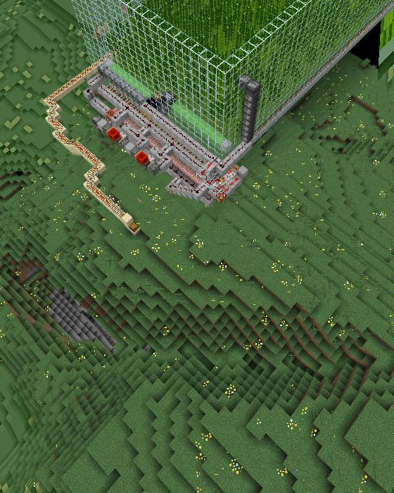

怎麼進來
先找人帶你。這台是介紹制，沒有公開招募。找一個已經在玩的朋友，請他跟 Ryan 說一聲，Ryan 把你加進白名單之後就能進來。
介紹人會先把伺服器規則給你看，花五分鐘看完再進來。

用電腦玩 Java 版，貼上位址就好，不用填連接埠。遊戲版本必須正好是 26.3，其他版本會被擋在登入畫面。

用手機、平板、主機或 Windows 玩基岩版，要填位址和連接埠兩格，連接埠不能留空。遊戲要更新到 26.40 以上，用原本的 Xbox 帳號登入，不需要另外買 Java 版。
在有裝基岩版的裝置上按這個按鈕，會直接把伺服器加進清單：
在 Minecraft 裡加入 Ryan mc同一個世界


Java 版和基岩版的玩家走在同一片地上。整個世界都在 3D 即時地圖上，有人走過的地方才會出現。
開啟 3D 地圖
生電可以玩，但每樣都有上限
TNT 複製、活塞複製和破基岩都照原版開著。伺服器跑在家用電腦上，一台機器卡住，所有人一起卡，所以規則裡寫了幾個硬上限。

| 版本 | Java 26.3、基岩 26.40 以上 | Paper |
|---|---|---|
| 模式 | 生存 | 難度 Easy |
| 死亡 | 不掉落物品 | 開啟 |
| PvP | 玩家互打 | 開啟 |
| 常載區塊 | 每人 | 4 個 |
| 單一農場 | 常駐實體 | 150 隻 |
| 村民交易所 | 村民 | 30 名 |
| 連續漏斗 | 單段 | 64 格 |
| 新蓋的地 | 離別人建築 | 100 格 |
| 出生點 | 保護半徑 | 20 格 |
| 備份 | 每天 04:00 | 留 7 天 |
| 重啟 | 提前廣播 | 5 分鐘 |
規則很短
小伺服器，寫下來的都會執行。帶朋友進來之前，先讓他看完。
閱讀伺服器規則連不上？
Java 版說版本太舊或太新
畫面寫 Outdated client 或 Outdated server，就是版本不對。伺服器跑 26.3，客戶端也必須是 26.3。在啟動器裡新增一個 26.3 的安裝設定再進來。
Java 版一直連線逾時
先看最上面的狀態是不是「現在開著」。有開還是逾時，可能是你的網路走 IPv6，換個網路（例如手機熱點）再試一次。
基岩版一直連不上
新增伺服器的畫面有兩格：位址填 bedrock.ryanchiu623.dpdns.org，連接埠填 443，不能留空。遊戲要 26.40 以上；剛出新版本時連不上，等伺服器跟上更新再試。
出生點附近放不了方塊
出生點周圍 20 格是保護區，只有管理員動得了。往外走一段就正常了，要在那裡蓋東西先問 Ryan。
本來好好的，突然全部斷線
伺服器跑在家用電腦上，沒有 24 小時開。計畫中的重啟會在遊戲裡提前 5 分鐘廣播；當機的話，看門狗每 5 分鐘會自動把它拉起來，等一下再試，或在 Discord 問。
進去之後有哪些指令？
最常用的三個：
/spawn回到出生點/menu打開伺服器選單/mobile隨身工作台：合成、熔爐、鐵砧